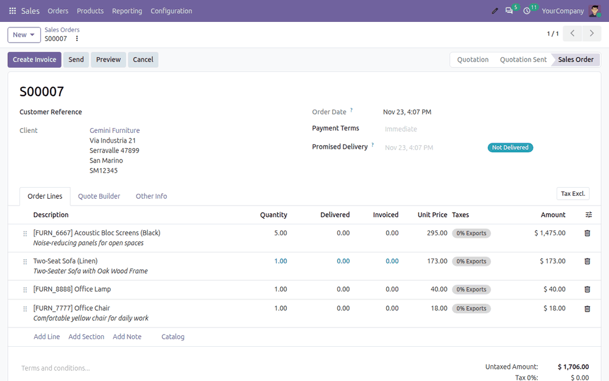

Odoo Mates · free and open source
Odoo Mates Pen
No Code Customizer & Studio for Odoo
Change any screen of Odoo, build new apps, design PDF reports, add approvals, automations and access rights. All by clicking and dragging, without code, and free.
Drag & drop editorEvery view typeApp builderReport designerApprovalsAutomationsAccess rightsUndo & versionsExport as a moduleOdoo Community
LGPL-3
free, every feature

How it works
Three steps, on the screen you are already on.
1Open the Studio
Click the pen in the top bar, on any screen of any app.
2Change by clicking
Drag fields, set their properties, build apps, reports and rules. It stays a draft only you see.
3Publish
One click makes it live for everyone. Undo any step, or restore an earlier version later.
Everything the customizer does
A no code, codeless customizer for screens, apps, reports and rules: all in one Studio, all free, for Odoo Community.
Edit on the real screen
The form, list or kanban you were on, with your own records. Click to select, drag to move, drop new fields where they go.
Every view type
Forms, lists, kanban, search, calendar, pivot, graph and activity views, each with the settings that matter.
New fields of any kind
Text, numbers, amounts, dates, selections, priority stars, links, tags, lines, files, pictures, signatures, related fields and totals.
Buttons, tabs and stages
Smart buttons that count linked records, header buttons, tabs, columns, ribbons, a chatter, and stages with a status bar in one click.
Build new apps
An app with its own menu and icon, made from ready features: stages, responsible, contact, dates, amount, tags, lines and more.
PDF reports from blocks
Titles, text with fields, tables of lines with totals, addresses, pictures, codes: on a live preview of a real record.
Approvals on buttons
A button only runs once a group or a person approved it, for every record or only some. Checked on the server.
Automations and access
Plan activities, send emails or set fields on their own; decide who reads, edits, creates and deletes, and check any user.
Safe by design
Drafts, undo and redo, published versions you can compare and restore, a health check after updates, and export as a real module.
A closer look
Each part of the Studio, as it looks in Odoo 20.
FORMS
Form editor: drag fields where they belong
Drag a new field or an existing one onto the form: a line shows where it lands. Name it, and it is on the screen at once, in your draft.
✓Tabs, columns, groups, ribbons, buttons, stages, chatter
✓19 kinds of new fields, or any existing one
FORMS
Visibility without code
Hide a field, make it required or read-only, always or only when a condition is true. Conditions are built from rows with Odoo's own editor; groups restrict who sees it.
✓Invisible, required or read-only, always or by condition
✓Only for the groups you choose
VIEWS
Lists, kanban and search
Optional columns, totals, editable lists and sorting; kanban columns and cards; filters and group-bys built with the domain editor.
✓Optional columns, totals, editable rows, sorting
✓Kanban columns and cards
VIEWS
The search view, as three lists
The fields searched as you type, the filters and the group-bys: add, rename, reorder and remove them.
✓Fields searched as you type
✓Filters and group-bys, in the order you want
APPS
No code app builder: an app in a minute
Name it, pick its colour and the features it needs. Pen makes the model, the form, list, kanban, calendar and search views, the menus and the icon.
✓Model, views, menus and icon made for you
✓Stages, responsible, dates, tags, lines, chatter and more
APPS
Menus of any app
Rename, reorder, hide and add menus, or open the views a menu shows straight in the Studio.
✓Rename, reorder, hide and add menus
✓Menus of modules are hidden, never deleted
REPORTS
Report designer: PDF reports, designed live
Start from the fields the form shows, add blocks, write text with {{ fields }}, and see the report of a real record as you go. Add blocks above or below the reports of modules too.
✓Titles, text, fields, tables, addresses, barcodes, QR codes
✓New reports, or blocks added to module reports
RULES
Approvals that cannot be skipped
When an approval is missing, the button shows who has to approve instead of running. Approvers approve or reject; others ask with an activity.
✓By group or by person, for all records or some
✓Checked on the server: the button waits
RULES
Automations
When a record is created, changed, or a date comes: plan an activity, send an email, set a field or log a note. Test any rule on a record now.
✓On create, on change, or on a date
✓Activity, email, field update or note
RULES
Access rights
Give a group access to some or all records, restrict everybody, create groups, and see what a user can do and how many records they see.
✓Permissions per group, restrictions for everybody
✓Check what any user can see
SAFETY
Drafts, undo and versions
Every step can be undone. Each publication is kept: compare it with the one before and restore it in one click.
✓Undo and redo every step
✓Compare and restore published versions
SAFETY
Health check, export and import
After a module update, see what no longer fits in one place. Export everything as an installable module, and import it back to keep editing.
✓What no longer fits after an update, in one place
✓Export as an installable module, import it back
How it stays safe
Nothing live until you publish
Changes are a draft only the Studio shows. Publish makes them live for everyone; Discard throws them away.
Real inherited views
Every change is a standard inherited view of Odoo. A change that no longer fits after an update is skipped and listed, never breaking the screen.
Your data stays
Removing a field from a view keeps its data. Deleting a custom field first shows everything that uses it.
Yours to keep
Uninstalling Pen leaves your views, apps, reports and fields in place: only the editor goes.
Also from Odoo Mates